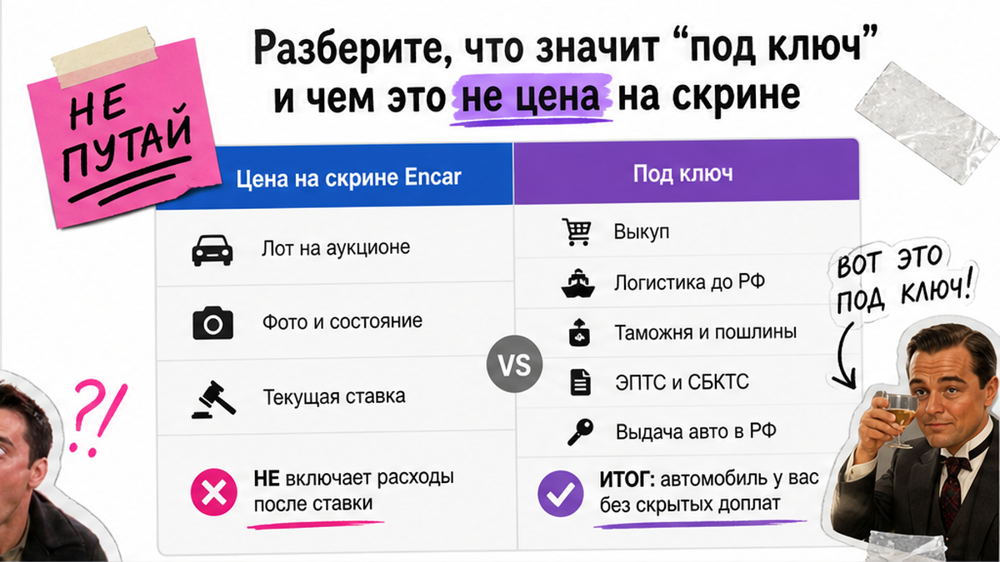
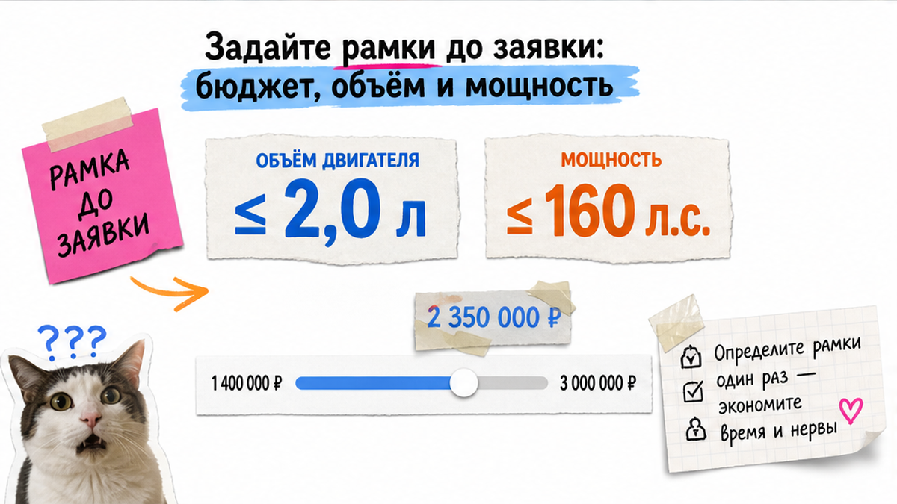
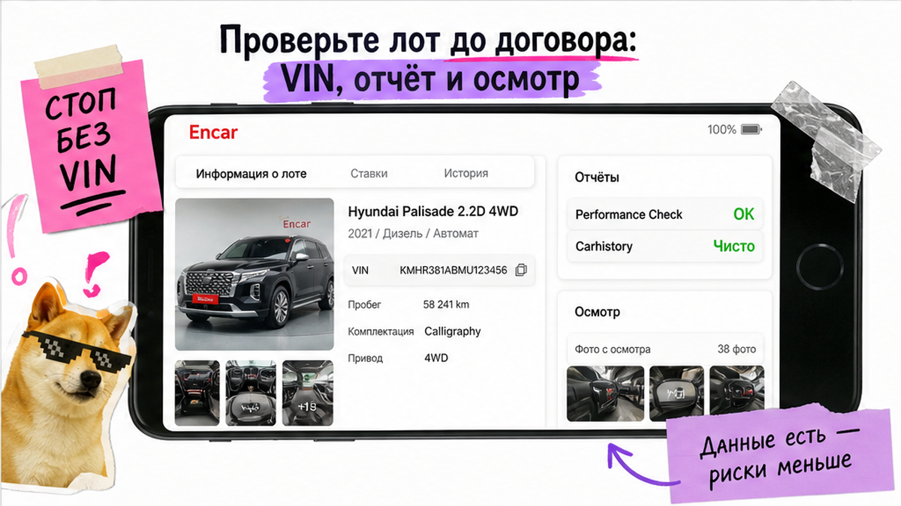

Алексей из Новосибирска увидел в Telegram Sonata "под ключ за 2,4 млн" и почти отправил 100 тысяч "за подбор" – без VIN и без состава цены. Типичная ловушка: красивый скрин Encar ещё не ключи в руках. Ниже – пошаговый план заказа авто из Кореи под ключ в 2026: рамка параметров, двойной коридор и чек-лист до депозита. После гайда вы сами решите – платить или стоп.
TL;DR / Быстрый инсайт: Цена на Encar – не смета "под ключ". Сначала рамка: бюджет с конца, объём до 2,0 л, мощность до 160 л.с., возраст и город выдачи. Депозит – только после VIN, отчёта истории, осмотра и договора на русском с составом цены. Штатный цикл часто 30–55 дней: выкуп → Пусан → Владивосток → растаможка → ЭПТС → выдача.
Мы в Авто-Сейлс во Владивостоке сто раз видели, как люди влюбляются в объявление, а про коридор и документы вспоминают уже после перевода. "Под ключ" звучит просто, но внутри – цепочка ролей. Ваша задача на старте не стать брокером самому себе, а собрать рамку и стоп-лист до денег.
В 2026 лот часто ломается сразу с двух сторон. Корея с 2024 года режет экспорт легковых авто с мотором больше 2,0 л без спецразрешения. В России льготный утильсбор для физлица держится на мощности до 160 л.с. (ПП РФ № 1713). Турбо 1,6 на 180 л.с. может выйти по объёму и взорвать бюджет утильсбором. Кроссовер 2,5 л – наоборот, часто не выходит из Кореи легально.

На пальцах: Encar – корейская площадка объявлений. Цифра в карточке – цена лота "там". "Под ключ" – смета до вас в городе: лот + расходы в Корее + фрахт + пошлина и утильсбор + СБКТС и ЭПТС + логистика по РФ + сопровождение. Сравнивать скрин с местным объявлением "как есть" – ошибка новичка номер один.
Мини-словарь:
Делать: просите письменную смету с перечнем статей, а итог считайте индивидуально в каталоге avto-sales125.ru. Не делать: верить готовым суммам "Sonata выйдет в X" из чужих каналов.
| Что сравниваете | Цена на Encar | Смета "под ключ" |
|---|---|---|
| Что внутри | Лот в Корее | Лот + логистика + таможня + документы + выдача |
| Кто считает | Площадка / продавец | Компания под ваш VIN и город |
| Можно ли бронировать по скрину | Нет | Только после договора и отчётов |
| Типичная ошибка | "Дешевле рынка на миллион" | Скрытые доплаты после задатка |
Итоговый вердикт: скрин Encar и задаток "за подбор" – ещё не услуга под ключ. Сначала состав цены письменно, потом деньги.

Боль "выберу красивый мотор и попаду на утиль или запрет" лечится до эмоций. На практике рамка занимает 20–30 минут.
Например, турбо "небольшой по литражу", но 180+ л.с. – классическая ловушка: из Кореи выезд возможен, а в РФ смета прыгает.
Сделайте: отсекайте непроходные лоты до заявки по 2,0 л и 160 л.с. Не делайте: не бронируйте "редкую комплектацию" вне коридора в надежде на серую схему через ЕАЭС.

Читать карточку Encar нужно холодно. Performance Check – схема кузова с пометками ремонта. Insurance / Carhistory – страховая история по VIN. Rent/Lease – намёк на коммерческое прошлое.
Что запросить у подборщика до согласия на лот:
Типичная ошибка – согласиться на депозит "пока лот горячий", а отчёты обещать "завтра". В реальном проекте завтра часто превращается в новые доплаты.
Делать: сначала пакет отчётов, потом разговор про деньги. Не делать: платить за "очередь на осмотр" без VIN.
Схема до оплаты:
Рамка параметров → 2–3 варианта с отчётом → VIN + диагностика + история → договор на русском → депозит → выкуп
Боль "отдам депозит и останусь без машины" закрывается текстом договора, а не обещаниями в чате. До перевода в договоре должны быть:
Стоп-сигналы: только Instagram без юрлица; заниженная витрина; задаток "за подбор" без VIN; давление "утиль завтра вырастет – плати сейчас"; подсудность только в Корее.
Делать: пройти чек-лист ниже и только потом переводить. Не делать: слать задаток "за бронь слота" без машины в договоре. Детали по VIN удобно уточнять в Telegram @avtosales125.
Покупателю на старте обычно нужны паспорт, ИНН и СНИЛС. Экспортный пакет собирает поставщик. Ориентир цикла – около 30–55 дней; таможня во Владивостоке часто 5–12 рабочих дней после прихода судна. Задержки из-за документов, досмотра или СБКТС – нормальный повод спросить статус, а не терпеть молча.
Путь авто:
Подбор на Encar → проверка → договор/депозит → выкуп → экспортная декларация → море Пусан–Владивосток → растаможка → СБКТС/ЭПТС → выдача или автовоз
После оплаты спрашивайте: выкуплен ли лот, на каком судне едет, когда порт, когда ЭПТС стал "действующим". Владивосток – хаб: порт, склад, таможня, выдача.
Делать: закладывайте 30–55 дней и просите трекинг. Не делать: требовать "как с авторынка завтра" без статуса документов.
Критерий результата: у вас на бумаге есть рамка авто, список требований к договору и понимание этапов до выдачи. Если пункта нет – перевод рано.
Все 10 зелёные – можно обсуждать оплату. Хотя бы один красный – стоп. Расчёт и подбор – в каталоге Авто-Сейлс.
Сделайте: пройдите список как светофор. Не делайте: не пропускайте пункты 5–7 ради "вкусной" цены на скрине. Избегайте перевода без VIN.
Нужен расчёт под бюджет – откройте каталог Авто-Сейлс и напишите менеджеру. Форм на странице нет: цифры живут в каталоге и переписке.
Материал проверен: редакция Авто-Сейлс (эксперты по авто под заказ из Японии, Кореи и Китая).
Достоверность: факты сверены с разборами правил экспорта Кореи и ПП РФ № 1713 (порог 160 л.с.), гайдами по этапам Пусан–Владивосток и community-кейсами про депозит без VIN; актуальные расчёты – в каталоге.
Технически да, но новичок сам становится брокером: Encar, экспорт, фрахт, таможня, СБКТС, ЭПТС. Нет опыта – начните с рамки и компании с договором на русском.
Обычно лот, расходы в Корее, море, таможня и утильсбор, СБКТС/ЭПТС, логистика по РФ и сопровождение. Просите список письменно. Чужие суммы из постов не копируйте – считайте под VIN и город.
Корея даёт левый руль и рынок Encar с диагностикой в карточке. Япония – чаще аукционы и правый руль. Китай – другой пакет документов. Логистика часто сходится во Владивостоке, но правила отбора лота разные.
Ориентир – примерно 30–55 дней. Таможня во Владивостоке часто 5–12 рабочих дней после прихода. Спросите трекинг судна и статус ЭПТС, а не только "когда будет".
Только когда зелёные все 10 пунктов чек-листа: VIN, отчёты, осмотр, договор с составом цены и юрлицом РФ. Нет VIN или "задаток за подбор" – не переводите.
Считайте лот вне безопасного коридора новичка. Либо сознательно закладываете другой режим платежей, либо берёте другую комплектацию. До депозита – письменный расчёт, не устное "почти как льготный".
В каталоге Авто-Сейлс и в переписке с менеджером. На странице блога форм нет: так вы не путаете чужой пример с вашей сметой.